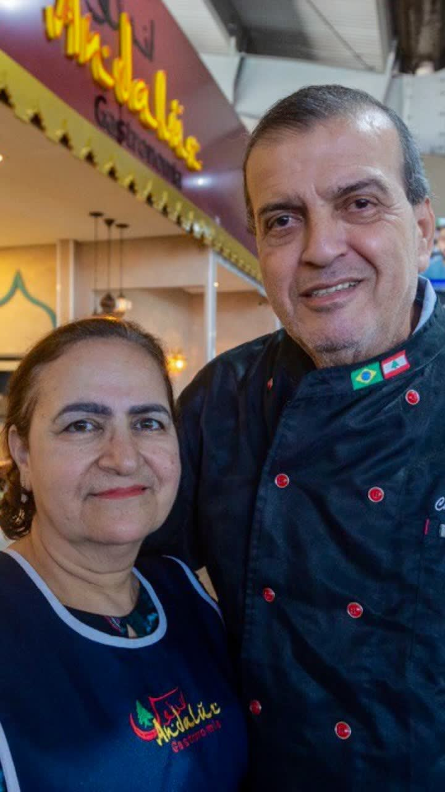
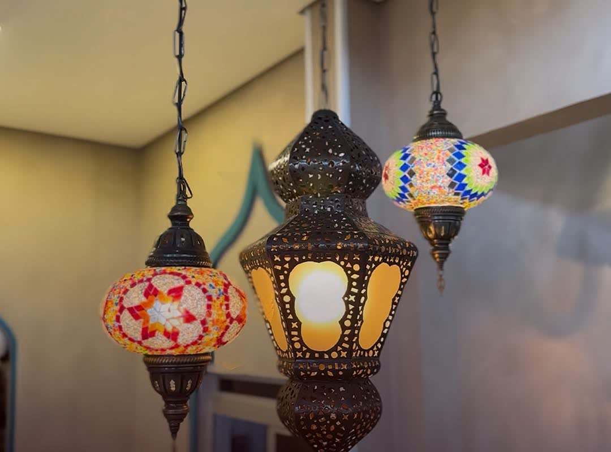
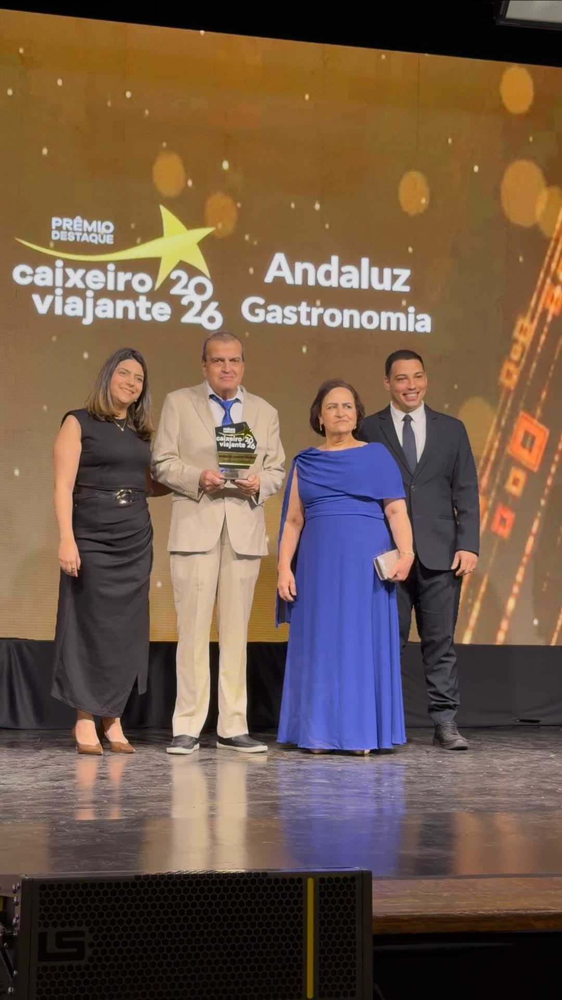
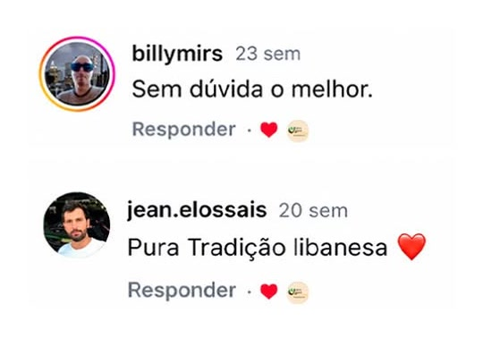

من عائلتنا
Nossahistória.
Uma família libanesa, uma cozinha cheia e um restaurante que virou parte da rotina de Jundiaí.

Começou com Joseph e Nina, uma cozinha libanesa e a coragem de recomeçar. Hoje a família serve no Mercadão da Ferroviários o que sempre serviu em casa: comida árabe feita com cuidado, para quem chega como se fosse da família.



Sete vezes Prêmio Destaque em Jundiaí.
- 2019
- 2020
- 2022
- 2023
- 2024
- 2025
- 2026
O reconhecimento veio do público e do comércio da cidade, edição após edição. A data de fundação e a chegada ao Mercadão entram aqui quando a família confirmar.

